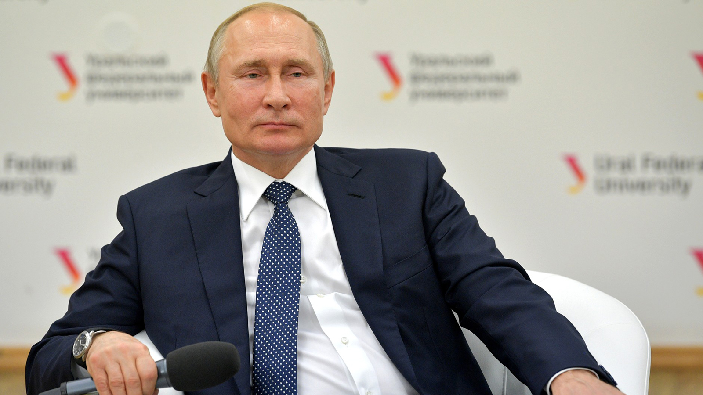

Президент Российской Федерации Владимир Владимирович Путин родился 7 октября 1952 года в Ленинграде (ныне Санкт-Петербург).
В 1975 году окончил юридический факультет Ленинградского государственного университета (ныне Санкт-Петербургский государственный университет).
По распределению был направлен на работу в органы государственной безопасности. В 1985-1990 годах работал в ГДР.
С 1990 года – помощник ректора Ленинградского государственного университета по международным вопросам, затем – советник председателя Ленинградского городского совета.
С июня 1991 года – председатель комитета по внешним связям мэрии Санкт-Петербурга, одновременно – с 1994 года – первый заместитель председателя правительства Санкт-Петербурга.
С августа 1996 года – заместитель управляющего делами президента Российской Федерации.
С марта 1997 года – заместитель руководителя администрации президента Российской Федерации, начальник главного контрольного управления президента Российской Федерации.
С мая 1998 года – первый заместитель руководителя администрации президента Российской Федерации.
В июле 1998 года назначен директором Федеральной службы безопасности Российской Федерации, одновременно – с марта 1999 года – секретарь Совета Безопасности Российской Федерации.
С августа 1999 года – председатель правительства Российской Федерации.
С 31 декабря 1999 года – исполняющий обязанности президента Российской Федерации.
26 марта 2000 года избран президентом Российской Федерации. Вступил в должность 7 мая 2000 года.
14 марта 2004 года избран президентом Российской Федерации на второй срок.
C 8 мая 2008 года – председатель правительства Российской Федерации.
4 марта 2012 года избран президентом Российской Федерации. Вступил в должность 7 мая 2012 года.
Кандидат экономических наук.
У Владимира Путина две дочери: Мария (1985 года рождения) и Катерина (1986 года рождения).